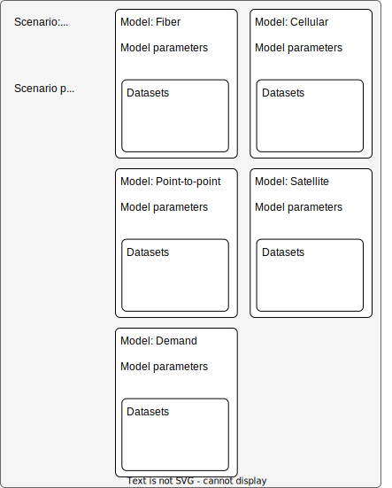

Welcome to the ITU Connectivity Planning Toolkit
The Connectivity Planning Toolkit (CPT) can be accessed here.
About the ITU Connectivity Planning Toolkit
The Connectivity Planning Toolkit is an easy-to-use mapping and analysis tool designed to help planners connect schools, hospitals, residential buildings, and other places to the internet. By assessing various technology options like fiber, cellular networks, point-to-point microwave, and satellite, the toolkit identifies the best way to bring connectivity to unconnected areas.
The toolkit evaluates the costs of each solution and provides a deployment plan that meets the cost limits you set. You can also customize the tool with your own data—uploading details about the locations of points of interest, ICT infrastructure, and mobile coverage. Additionally, it uses open data on population, road networks and topography to enrich the analysis, making it a powerful solution for planning affordable, efficient internet connectivity.
The Toolkit Model
- Before starting an analysis, you’ll need to select a scenario, such as "Minimize Total Cost of Ownership." Then, set up the scenario parameters, including details like the total budget and the planning period.
- Each scenario is made up of multiple models—one for each technology option, and a demand module. These models serve two purposes: they evaluate whether the technology is feasible and calculate the cost of deploying it. Each model comes with its own model parameters that guide the analysis and uses datasets containing information about points of interest, ICT infrastructure, and mobile coverage.
